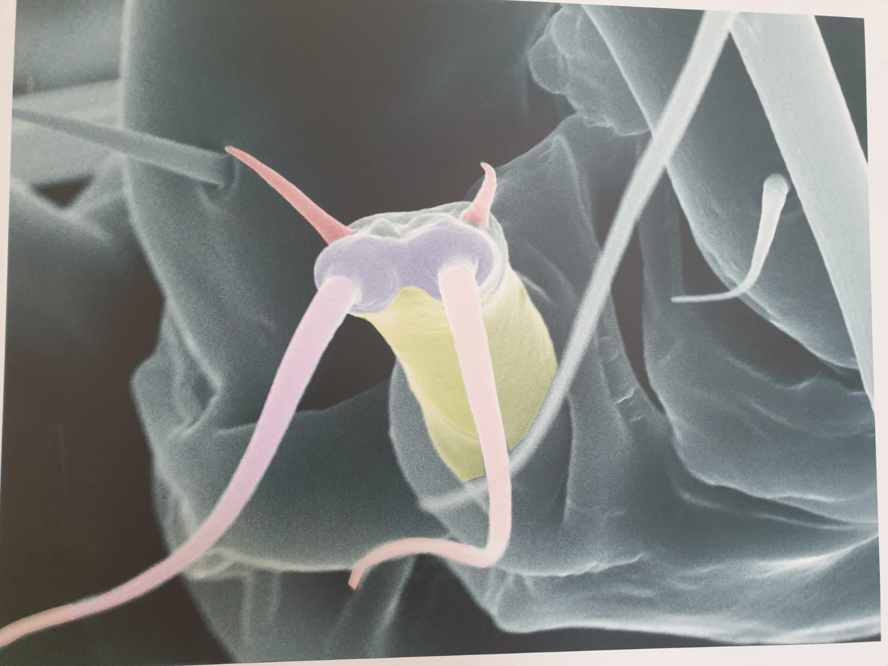

|  |  |
Ingenieria aerostática Beatriz Rodriguez Vazquez de Aldaraz Taraxacum officinale, conocida comúnmente como diente de león amargón, es una especie de la familia de las asteraceae que crece de forma espontánea en pastizales caminos y prados. Tiene interés apicola y usos medicinales Si las flores amarillas son Llamativas, especialmente para las abejas, más aun lo son sus frutos tipo cipsela. Es toda una obra de ingeniería aerostática, cada cipsela tiene autonomia para su desplazamiento al viento con el fin de invadir nuevos territorios, gracias penacho de pelos dispuestos con exquisita simetria. Y antes de despegar las cipselas están dispuestas ordenadamente con su estructura estriada sobre una base esférica (receptáculo) que permite su orientación hacia todos los puntos cardinales, Quién no ha soplado alguna vez en su vida un «molinillow? EQUIPO FOTOGRAFIA Sony NEX-5, objetivo Sony 3.5-5.6/18-5 |
Detalle de la cabeza de un Histiostomatoidae Jose María Sanabría Monge Esta imagen muestra cabeza de un acaro Histiostomatidae ha sido capturada sobre una mosca común. Estos se caracterizan por tener un tamaño muy pequeño (aproximadamente 600-900 m de longitud) una asociación cercana a los artropodos, principalmente insectos. Los ácaros usan diferentes grupos de insectos como portadores: escarabajos, moscas e himenópteros Hormigas, abejas y avispas), de esta manera colonizan diferentes hábitats como el estiércol de los animales, el compost. pozos de agua, etc. La parte bucal contiene diversas estructuras Llamadas queliceros que le permiten alimentarse de bacterias y otros microorganismos. EQUIPO FOTOGRAFÍA Microscopio Electrónico de barrido. XL30 |